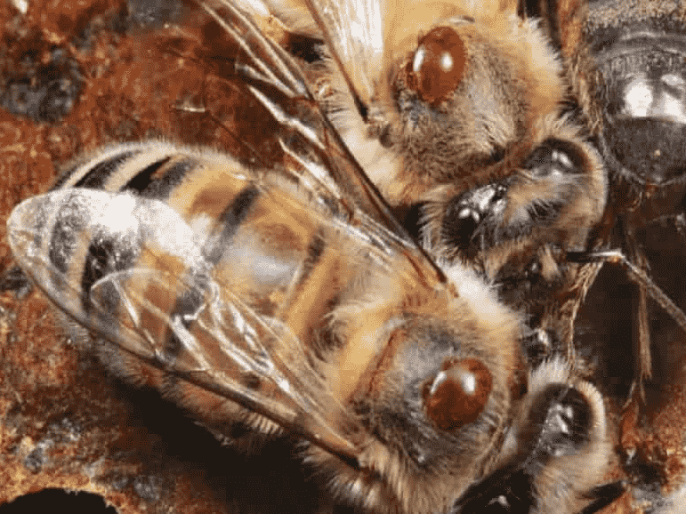

Болезни пчел
Болезни пчёл представляют серьёзную угрозу для пчелиной популяции и производства мёда, поэтому их изучение и контроль являются важными задачами для пчеловодов. Они могут привести к значительным потерям улья, ослаблению иммунитета пчёл и снижению их продуктивности. Поэтому знание основных болезней и методов борьбы с ними становится обязательным для каждого пчеловода.
Одной из наиболее распространённых болезней пчёл является варроатоз, вызванный клещом варроа. Этот паразит питается гемолимфой пчёл и распространяет различные инфекции, такие как вирус деформации крыльев и яичница. Варроатоз может значительно ослабить пчелиную семью, привести к гибели пчёл и уменьшить производство мёда. Для борьбы с этой болезнью пчеловоды часто используют химические препараты или методы механического удаления клещей.

Ещё одной серьёзной болезнью является нозематоз, вызванный ноземой - простейшим микроорганизмом. Этот патоген поражает пчелиную личинку, приводя к её гибели, и может привести к значительным потерям в пчелиной популяции. Для борьбы с нозематозом пчеловоды могут применять различные методы, такие как лечение улья антибиотиками или применение органических средств защиты.
Кроме того, существуют и другие болезни и патологии, такие как американский и европейский виды гнили пчёл, кокцидиоз и различные вирусные инфекции, которые также могут негативно повлиять на пчелиную популяцию и производство мёда.
Профилактика и контроль за болезнями пчёл играют важную роль в поддержании здоровья улья и обеспечении его продуктивности. Регулярные осмотры ульев, соблюдение гигиенических норм, применение профилактических мер и своевременное лечение заболевших ульев помогают снизить риск возникновения болезней и сохранить здоровье пчёл.